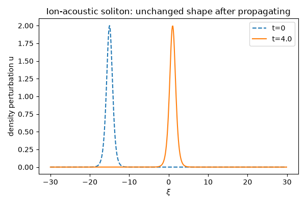

Note
Go to the end to download the full example code.
Ion-acoustic solitons: a KdV pulse that never changes shape#
Haruichi Washimi and Tosiya Taniuti (1966) applied the “reductive perturbation” method to the coupled cold-ion-fluid/Boltzmann-electron equations in the weakly nonlinear, weakly dispersive limit and showed the ion-acoustic wave problem reduces exactly to the Korteweg-de Vries (KdV) equation, in its canonical stretched-coordinate form for the normalized density (or potential) perturbation \(u(\xi, t)\) in a frame moving at the ion-sound speed:
Electron Boltzmann response supplies the nonlinear term, and ion inertia together with Debye-length dispersion supplies the \(\partial_\xi^3\) term. A KdV equation supports an exact traveling-wave solution in which nonlinear steepening is balanced, term for term, against linear dispersion,
a single density bump of speed \(c\) and amplitude \(c/2\) that propagates forever at constant speed and shape – an ion-acoustic soliton, whose speed always exceeds the linear sound speed by an amount set by its own amplitude.
ion_acoustic_soliton_profile() builds the
exact single-soliton solution, and
ion_acoustic_soliton_evolve() time-steps
it with a pseudo-spectral, Strang-split scheme – the stiff dispersive
term advanced exactly in Fourier space, the nonlinear advection by RK4 –
so its unchanging shape as it propagates is a genuine numerical result,
not built in by construction.
import matplotlib.pyplot as plt
import numpy as np
import physicskit as pk
The exact KdV single-soliton solution#
Speed c=4 in the stretched, ion-sound-speed frame gives amplitude c/2=2.
N, L = 512, 60.0
x = np.linspace(-L / 2, L / 2, N, endpoint=False)
u0 = pk.plasma.ion_acoustic_soliton_profile(x, speed=4.0, x0=-15.0)
Propagating without changing shape#
The pseudo-spectral, Strang-split KdV solver evolves the pulse with no soliton shape assumed going in; the peak advances by very close to c * (steps * dt) and keeps its amplitude, since nonlinearity and dispersion cancel exactly for this solution.
dt, steps = 0.0005, 8000
u = pk.plasma.ion_acoustic_soliton_evolve(u0, x, dt, steps)
shift = x[np.argmax(u)] - x[np.argmax(u0)]
print(f"predicted shift: {4.0 * steps * dt:.2f}, measured shift: {shift:.2f}")
print(f"amplitude change: {abs(u.max() - u0.max()):.4f}")
fig, ax = plt.subplots(figsize=(6, 4))
ax.plot(x, u0, "--", label="t=0")
ax.plot(x, u, label=f"t={steps * dt:.1f}")
ax.set_xlabel(r"$\xi$")
ax.set_ylabel("density perturbation u")
ax.set_title("Ion-acoustic soliton: unchanged shape after propagating")
ax.legend()
fig.tight_layout()
plt.show()

predicted shift: 16.00, measured shift: 16.05
amplitude change: 0.0060
Animating the traveling pulse#
anim = pk.plasma.animate_ion_acoustic_soliton(u0, x, dt=0.0005, steps_per_frame=200, n_frames=40)
plt.show()
Check#
The soliton moves at its speed without changing shape.
Total running time of the script: (0 minutes 5.340 seconds)